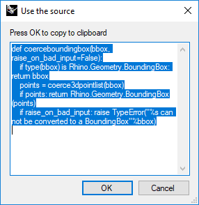

RhinoPython: may the source be with you!
Hello everyone,
I wrote a script to help me code in python and learn RhinoCommon and decided to share it with you 😜
As you may know, the rhinoscriptsyntax library is written in Python and uses rhinocommon functions, also in Python, under the hood. In order to look up the underlying code you can open up the full python file, you can use the inspect module or you can save the script below to your computer and run it each time you want to look up a particular function. For instance if you search for ‘bounding’ you get the following options:

And by clicking on the 3rd option you get the underlying source code, which you can read in the box, copy elsewhere, …

from inspect import getsource, getmembers, isfunction import rhinoscriptsyntax as rs """ Script to view the source code for rhinoscript modules in Rhino 5 + 6 By Graham Knapp for personal use and for the McNeel Discourse forums https://discourse.mcneel.com/t/python-may-the-source-be-with-you/84655 13/6/2019 """ def get_source(): search_term = rs.StringBox('Function name to search for', title='rhinoscriptsyntax' ).lower() if not search_term: return # (tuples of name, fuction) functions = {name: obj for name, obj in getmembers(rs) if isfunction(obj) and search_term in name.lower()} if not functions: return selected = rs.ListBox(functions.keys(), title='rhinoscriptsyntax') if not selected: return the_source = getsource(functions[selected]) box_result = rs.EditBox(the_source, message='Press OK to copy to clipboard', title='Use the source') if box_result: rs.ClipboardText(box_result) return box_result if __name__ == '__main__': get_source()